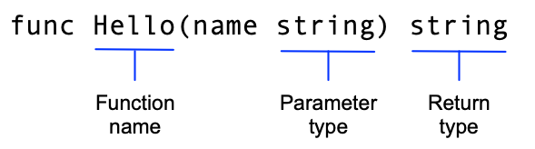

Tutorial: Create a Go module
This is the first part of a tutorial that introduces a few fundamental
features of the Go language. If you're just getting started with Go, be sure
to take a look at
Tutorial: Get started with Go, which introduces
the go command, Go modules, and very simple Go code.
In this tutorial you'll create two modules. The first is a library which is intended to be imported by other libraries or applications. The second is a caller application which will use the first.
This tutorial's sequence includes seven brief topics that each illustrate a different part of the language.
- Create a module -- Write a small module with functions you can call from another module.
- Call your code from another module -- Import and use your new module.
- Return and handle an error -- Add simple error handling.
- Return a random greeting -- Handle data in slices (Go's dynamically-sized arrays).
- Return greetings for multiple people -- Store key/value pairs in a map.
- Add a test -- Use Go's built-in unit testing features to test your code.
- Compile and install the application -- Compile and install your code locally.
Prerequisites
- Some programming experience. The code here is pretty simple, but it helps to know something about functions, loops, and arrays.
- A tool to edit your code. Any text editor you have will work fine. Most text editors have good support for Go. The most popular are VSCode (free), GoLand (paid), and Vim (free).
- A command terminal. Go works well using any terminal on Linux and Mac, and on PowerShell or cmd in Windows.
Start a module that others can use
Start by creating a Go module. In a module, you collect one or more related packages for a discrete and useful set of functions. For example, you might create a module with packages that have functions for doing financial analysis so that others writing financial applications can use your work. For more about developing modules, see Developing and publishing modules.
Go code is grouped into packages, and packages are grouped into modules. Your module specifies dependencies needed to run your code, including the Go version and the set of other modules it requires.
As you add or improve functionality in your module, you publish new versions of the module. Developers writing code that calls functions in your module can import the module's updated packages and test with the new version before putting it into production use.
-
Open a command prompt and
cdto your home directory.On Linux or Mac:
cd
On Windows:
cd %HOMEPATH%
-
Create a
greetingsdirectory for your Go module source code.For example, from your home directory use the following commands:
mkdir greetings cd greetings
-
Start your module using the
go mod initcommand.Run the
go mod initcommand, giving it your module path -- here, useexample.com/greetings. If you publish a module, this must be a path from which your module can be downloaded by Go tools. That would be your code's repository.For more on naming your module with a module path, see Managing dependencies.
$ go mod init example.com/greetings go: creating new go.mod: module example.com/greetings
The
go mod initcommand creates a go.mod file to track your code's dependencies. So far, the file includes only the name of your module and the Go version your code supports. But as you add dependencies, the go.mod file will list the versions your code depends on. This keeps builds reproducible and gives you direct control over which module versions to use. - In your text editor, create a file in which to write your code and call it greetings.go.
-
Paste the following code into your greetings.go file and save the file.
package greetings import "fmt" // Hello returns a greeting for the named person. func Hello(name string) string { // Return a greeting that embeds the name in a message. message := fmt.Sprintf("Hi, %v. Welcome!", name) return message }This is the first code for your module. It returns a greeting to any caller that asks for one. You'll write code that calls this function in the next step.
In this code, you:
-
Declare a
greetingspackage to collect related functions. -
Implement a
Hellofunction to return the greeting.This function takes a
nameparameter whose type isstring. The function also returns astring. In Go, a function whose name starts with a capital letter can be called by a function not in the same package. This is known in Go as an exported name. For more about exported names, see Exported names in the Go tour.
-
Declare a
messagevariable to hold your greeting.In Go, the
:=operator is a shortcut for declaring and initializing a variable in one line (Go uses the value on the right to determine the variable's type). Taking the long way, you might have written this as:var message string message = fmt.Sprintf("Hi, %v. Welcome!", name) -
Use the
fmtpackage'sSprintffunction to create a greeting message. The first argument is a format string, andSprintfsubstitutes thenameparameter's value for the%vformat verb. Inserting the value of thenameparameter completes the greeting text. - Return the formatted greeting text to the caller.
-
Declare a
In the next step, you'll call this function from another module.